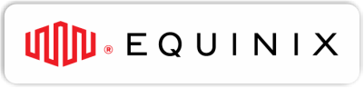
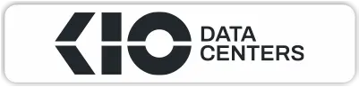
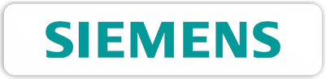

El agente afianzador que entiende el ecosistema MEXDC
Estructuramos programas corporativos de afianzamiento para operadores, proveedores y contratistas del ecosistema de data centers en México. Emisión ágil, respaldo de las principales afianzadoras y acompañamiento legal integral.
Miembro del ecosistema MEXDC
La Asociación Mexicana de Data Centers (MEXDC) reúne a operadores, proveedores y profesionales del ecosistema digital en México. Pertenecer al ecosistema es una señal de credibilidad verificable públicamente.



SAI: El análisis que cambia cómo eligen sus afianzadoras
Supplier Analysis es nuestra plataforma propia de análisis financiero y de riesgo para proveedores del ecosistema de data centers. Convierte la evaluación de un fiado en datos accionables antes de comprometer una fianza.
-
Score de salud Indicador sintético de solvencia del proveedor.
-
Indicadores de riesgo Alertas tempranas sobre obligaciones y litigios.
-
Datos fiscales Cumplimiento y situación ante el SAT.
-
Concentración comercial Dependencia de clientes y proveedores clave.
Soluciones de afianzamiento para el ecosistema de data centers
Emisión y administración de fianzas
Fianzas de cumplimiento, anticipo y buena calidad para operadores de data centers y proveedores del ecosistema. Gestión integral desde la solicitud hasta la vigencia.
Programas corporativos
Programas de afianzamiento a medida para operadores de data centers, proveedores de infraestructura tecnológica, conectividad y empresas del ecosistema digital.
Gestión jurídica y reclamaciones
Equipo legal especializado que acompaña desde la revisión contractual hasta el cobro de reclamaciones. Más de $130 MDP recuperados.
Respaldados por las principales afianzadoras de México
Las fianzas que emitimos cuentan con el respaldo de aseguradoras autorizadas por la CNSF. Emisoras, no operadoras: son las que asumen el riesgo afianzador.
Niveles de servicio
Tiempos de respuesta claros y medibles. Sin letra chica.
Emisión de fianza
Con expediente completo, tu póliza está lista en un día hábil.
Análisis SAI del fiado
Evaluación financiera y de riesgo en menos de una hora.
Correcciones a fianzas
Ajustes y modificaciones procesados de forma inmediata.
Respuesta a correos
Toda consulta recibe respuesta el mismo día hábil.
Reportes consolidados
Estado de cuenta y seguimiento quincenal de tu programa.
Acompañamiento en reclamaciones
Te acompañamos desde la reclamación hasta la resolución y el cobro.
Hablemos de tu proyecto de infraestructura
Cuéntanos sobre tu operación o proyecto. Obtén respuesta en menos de 2 horas hábiles.